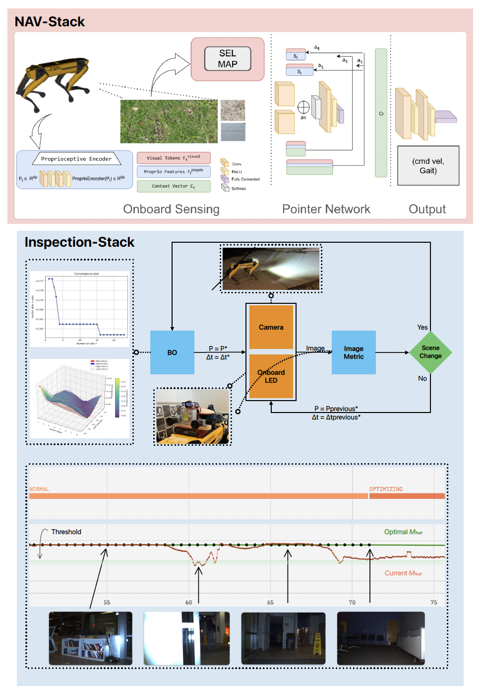

We present a complete solution for the autonomous inspection of a culvert using a legged robot by leveraging a robust pipeline that includes two main modules: a high-level controller and active illumination control in low light environments. We present preliminary results from our modules and share the outcomes in terms of lessons learned during the experiments performed from the culverts of Erie Canal, New York. We also address the challenges encountered during the real-world deployment of our autonomous pipeline.
 The Erie Canal has become a vital waterway connecting the Hudson River to Lake Erie shaping the history of our town. Due to their age, the culverts underneath these banks—designed to drain water from one side of the canal to the other—have experienced structural degradation reported by New York State Canal Cooperation (NYCC) requiring frequent inspections to prevent failure, which could lead to severe and hazardous damage to the town..
The Erie Canal has become a vital waterway connecting the Hudson River to Lake Erie shaping the history of our town. Due to their age, the culverts underneath these banks—designed to drain water from one side of the canal to the other—have experienced structural degradation reported by New York State Canal Cooperation (NYCC) requiring frequent inspections to prevent failure, which could lead to severe and hazardous damage to the town..
NAV-Stack: This module incorporates a context-aware, learning-based architecture designed to generate high- level command velocities and predict stable gaits. It enables the legged robot to navigate safely and stably from street parking down a steep 7-meter slope to the culvert for inspection. The model trained in this module has already been tested in simulation and has shown promising results compared to the baseline controllers. We present these results in Section. Inspection-Stack: We develop an active illumination control scheme named Inspection-Stack which uses online Bayesian optimization to find optimal external light intensity (P ) and exposure-time (∆t). We experi- mentally validate our method within a challenging sub- terranean environment: a 66m long, 1m diameter culvert beneath the Erie Canal. Extremely low ambient light and repeating textures make visual estimation challenging. Our method improves feature-matching performance.
@inproceedings{Singh2025,
title={Legged Robots for Infrastructure Maintenance: Autonomous Culvert Inspection in Erie Canals},
author={Kartikeya Singh and Yash Turkar and Youngjin Kim and Matthew Lengel and Karthik Dantu},
booktitle={Workshop on Field Robotics (WFR), International Conference on Robotics and Automation (ICRA) 2025},
year={2025},
url={https://droneslab.github.io/INSPECTOR/}
}
@inproceedings{Turkar2025,
title={Active Illumination Control in Low-Light Environments using NightHawk},
author={Yash Turkar and Youngjin Kim and Karthik Dantu},
booktitle={International Symposium on Experimental Robotics (ISER) 2025 - Selected},
year={2025},
url={https://droneslab.github.io/NH/}
}